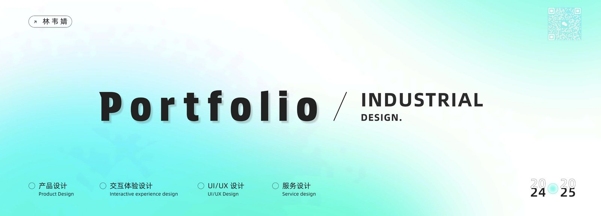
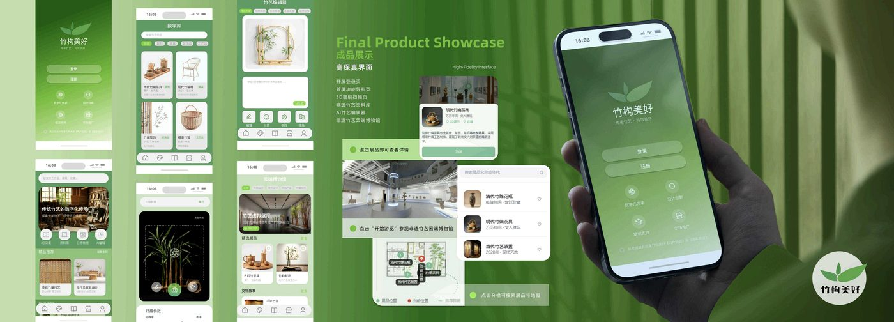
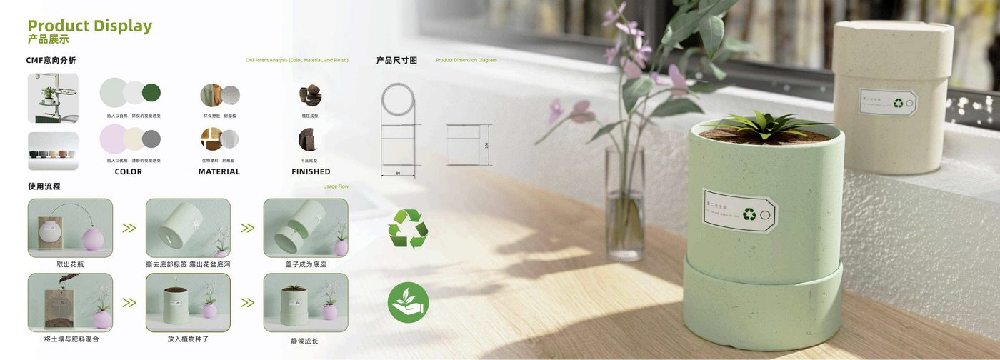
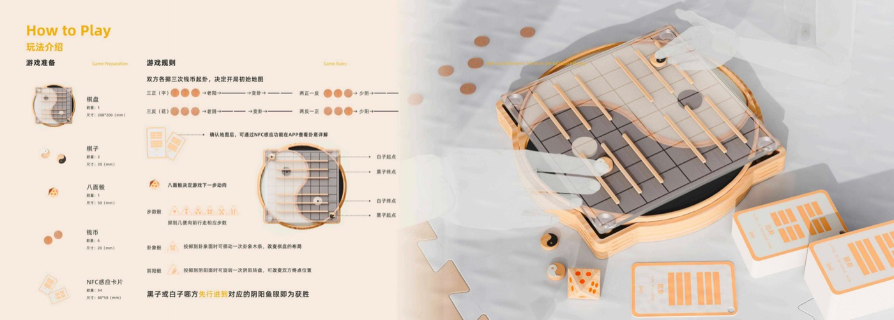
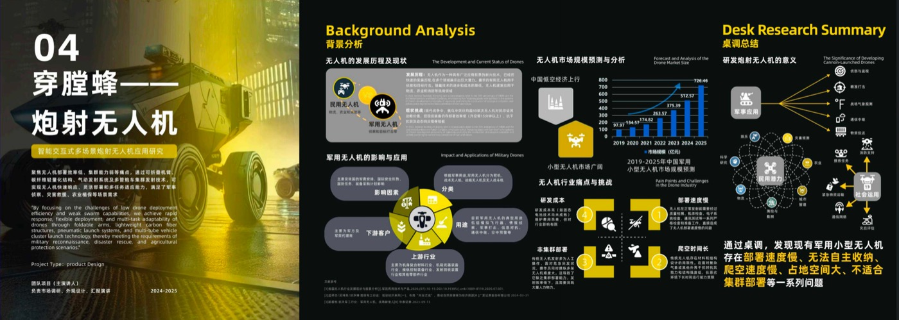
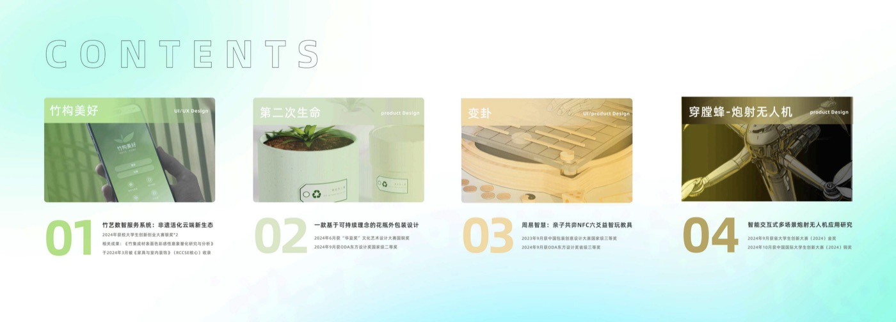
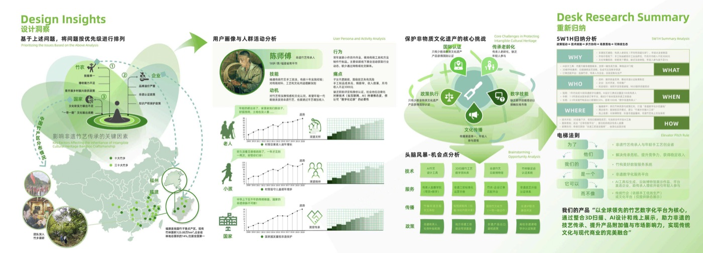
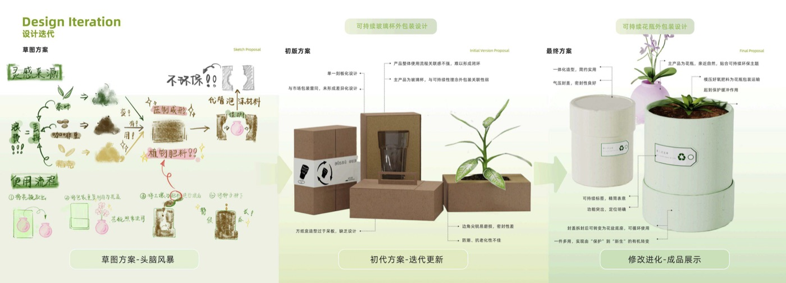
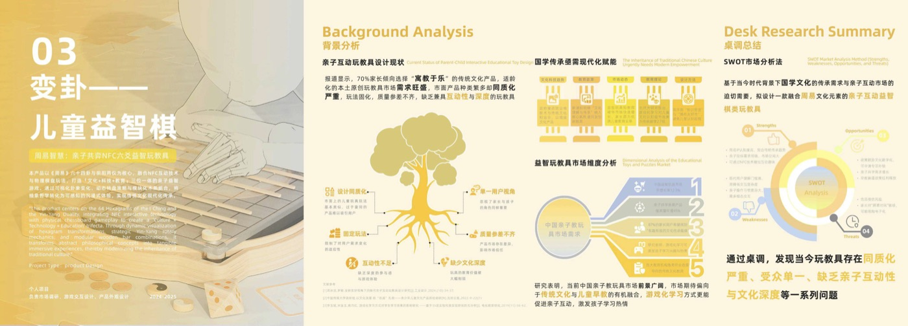

研究型设计学习者
本科阶段我围绕产品设计、交互体验、CMF、设计心理学、设计行销与管理等方向持续训练，并在多个项目中担任负责人或核心成员。现在我将研究重心放在服务设计与用户研究，期待把用户洞察、服务蓝图、触点规划与原型验证结合起来，形成更可持续的系统方案。
我的项目覆盖非遗数字化服务、可持续包装、亲子益智产品与多场景无人机系统。相比单一造型表达，我更希望用调研、分析和叙事把产品、服务、场景和社会价值串联起来。
Service Design · User Research · Industrial Design Engineering
以人为本，连接研究洞察与服务创新
广东工业大学工业设计工程25级研究生，研究方向为服务设计与用户研究。基于产品设计背景，我关注真实情境中的用户需求、系统触点与可持续体验，用研究、原型和跨学科协作推动设计落地。

About Me
从产品设计进入服务设计与用户研究，我更关注"为什么设计"以及"设计如何进入真实系统"。
本科阶段我围绕产品设计、交互体验、CMF、设计心理学、设计行销与管理等方向持续训练，并在多个项目中担任负责人或核心成员。现在我将研究重心放在服务设计与用户研究，期待把用户洞察、服务蓝图、触点规划与原型验证结合起来，形成更可持续的系统方案。
我的项目覆盖非遗数字化服务、可持续包装、亲子益智产品与多场景无人机系统。相比单一造型表达，我更希望用调研、分析和叙事把产品、服务、场景和社会价值串联起来。
Education
以工业设计工程为当下研究主线，以产品设计训练作为方法基础。
工业设计工程 · 25级研究生
研究方向聚焦服务设计与用户研究，关注复杂场景中的用户需求、服务流程、交互触点与创新价值转化。
产品设计 · 本科
本科绩点 3.65/5.0，综合排名 1/58。主修产品表现技法、CMF设计应用、产品设计进阶、人因工程学、造型材料与成型工艺、设计心理学等课程。
Experience
在企业设计、组织协作和项目管理中积累真实问题处理经验。
Capabilities
能力结构围绕"研究、策略、原型、表达、验证"展开。
用户访谈、问卷调研、竞品分析、需求分层、用户画像、用户旅程、服务蓝图、触点规划。
产品概念推导、CMF分析、信息架构、流程图、低/高保真原型、交互说明。
AI/IoT数字服务生态、NFC交互、数据分析基础、项目汇报、团队协作。
Portfolio
作品从用户研究、系统策略、原型表达和成果转化四个维度呈现。

围绕传统竹艺的数字化传承与服务创新，构建资料库、云端博物馆、AI竹艺编辑器和3D智能扫描等触点，探索非遗活化的云端新生态。深入福建宁德等地调研，覆盖45+乡村，收集产品数据8356份。

基于环保与再利用理念，将花瓶外包装转化为可种植容器。茶叶渣、蛋壳等可堆肥材料经好氧发酵转化为花盆，实现"包装→花盆→土壤"全生命周期闭环。三版迭代优化。

以周易文化为灵感，结合亲子共学与NFC交互，将传统文化转化为可操作、可陪伴的儿童学习体验。双用户画像：家长决策层+儿童使用者层。

面向农业植保与多场景应用，提出可折叠炮射无人机与集群反射平台方案，创新性引入炮射机制突破地形限制，支持山地/温室/大田等不同环境。




Honors
竞赛、研究与校园实践共同构成持续成长的证据链。
国家级二等奖、省级三等奖
国铜奖
竹集成材表面色彩感性意象量化研究 · RCCSE核心期刊
国家级三等奖
连续三年 · 艺术节优秀个人奖连续四年
Contact
欢迎交流服务设计、用户研究与项目合作。